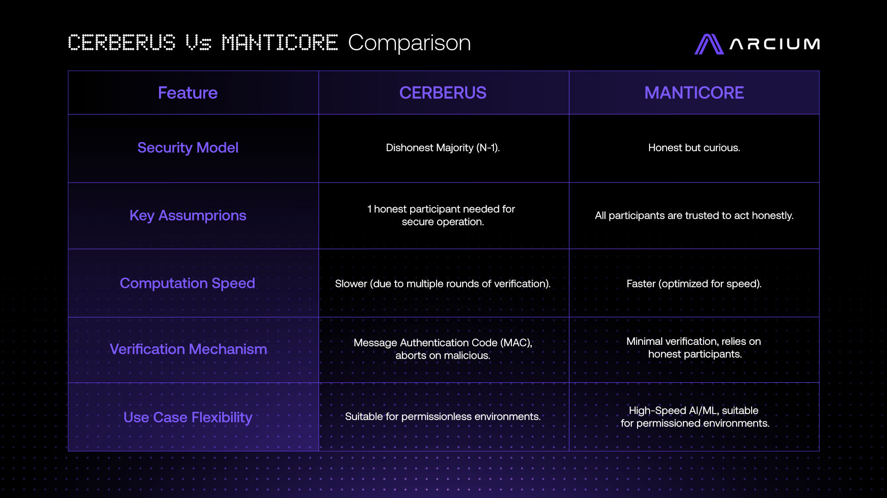
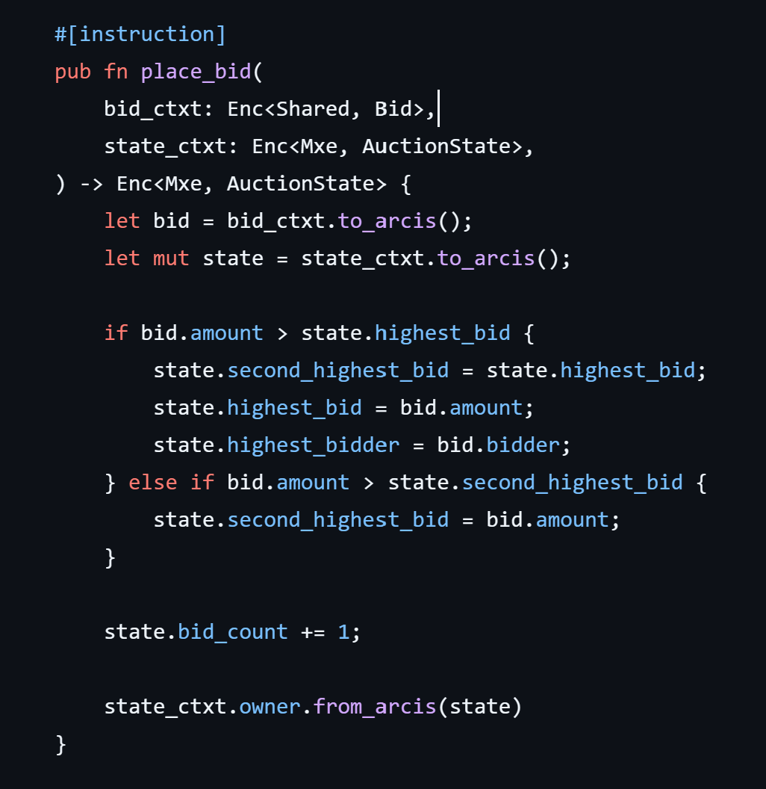
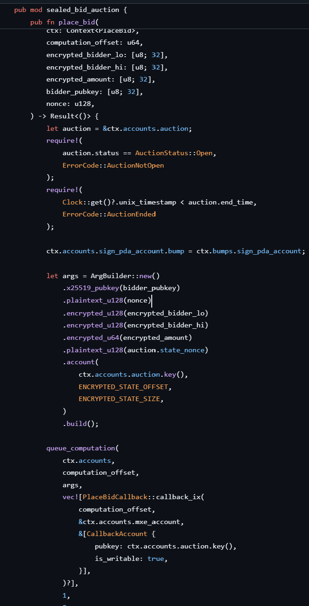
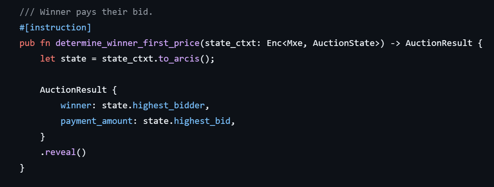
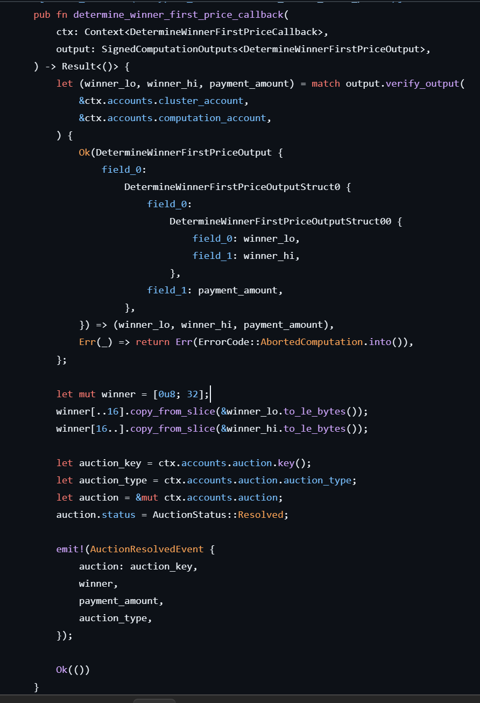
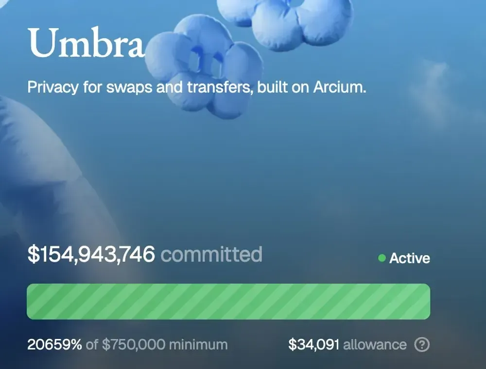
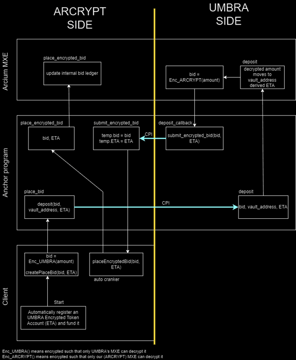

19th June 2026
In 2026 I built Arcrypt, the first truly sealed auction platform. By "sealed auction" we mean an auction where bids are not visible to competing participants (even if bidder identities are visible). By "truly" we mean that no third party is entrusted with sealing bids. This is achieved through the combination of a public blockchain network and a privacy protocol that supports network controlled encrypted balances. This article focuses on how it works, why it might be useful, the economic value of privacy in finance, and the steps needed to decentralize institutional finance.
To begin, we need to define some important concepts. A blockchain network is a ledger of transactions validated using peer-to-peer cryptographic hashes. If you are familiar with BitTorrent, you can think about it as a torrent of transactions with a pre-determined rule for digesting new transactions. In other words, many people can agree on who has spent what and in which order. More on this can be found in Appendix I.
A smart contract is a contract written in code and guaranteed by cryptographic signatures. An example could be an auction, where some kind of asset is locked within an account owned by the program itself until close. The auction is just a computer program that exposes functions like create_auction() and place_bid() which governs how tokens are locked away and ensures the highest bidder gets the payout. More on smart contracts can be found in Appendix II.
We also need to explain what a privacy protocol is. Inherently, all blockchains are public by design and every transaction is visible within every block. However, one might be less concerned with money once we have a blockchain and instead use it to transmit payloads of data, which themselves can be encrypted. Blockchains then, may better be understood as "public state machines". Solana is great at this, due to its highly extensive smart contract ecosystem in Rust. Note, Solana allows many kinds of tokens to exist and be created in finite number — if that number is 1, then this is called an "NFT" — as well as the basis "native" token "SOL". You can then trade one token with another according to the rules defined in a smart contract. This enables completely decentralised trading (DEX) within one ecosystem (but still requires a centralised exchange (CEX) to convert it back to fiat dollars again, or to another chain e.g. SOL to Bitcoin). Trading publicly comes with drawbacks.
Consider the following example: I'm trying to buy tokens on a liquidity pool. That means when I buy A by spending B, the price of A increases according to the rules of a smart contract. If someone sees I've signed a transaction to buy a large amount of A, they buy a small amount of A and place it in an earlier block than my trade — usually by using extremely low latency validators that can insert a transaction before most validators have "seen" my bigger trade. Then, the attacker's transaction lands first, pushes up the price of A, then my transaction lands and I get worse value. The price of A then significantly goes up, and the attacker sells and pockets the difference at my cost. This is called "sandwiching".
Or consider lending. All on-chain lending programs must ensure you do not go into net debt, as there is no law-enforcement agency that will come and force you to pay up blockchain tokens to the lender. Therefore, you need to place a deposit down on a loan, using a different token as collateral. You can use part of the deposit to pay back the loan if you need to. This might seem counterintuitive, but this is very effective if your deposit increases in value relative to the debt, which is usually a highly liquid token, analogous to dollars (see Appendix II on liquidity). This is how wealthy people buy things without spending large amounts of their stock. Take out a loan, spend it on whatever you want, your deposit increases in value, then you can sell less of your stock to repay the dollar debt. This comes with risk, because sometimes the deposit decreases in value. Blockchains cannot sign signatures for you, and hence if your deposit decreases in value such that it approaches the value of the debt, the contract suddenly enables anybody to repay your loan for you — repay the debt, get the deposit, which is still slightly more than the loan. This also comes with risk, because you are buying a depreciating asset. This is called "liquidation", and costs borrowers money.
Every day, millions of dollars are lost on Solana alone to automatic bots in these ways, among others. I may also just want to hide how much money I have. On the blockchain, not just every transaction but consequently every balance is visible publicly. If you hold a lot of tokens, everyone knows, exposing you to attack. Nobody can see your bank balance, and so if we want a completely free decentralised ecosystem, privacy is essential for mass adoption.
ZCash was the first serious attempt to do this. On ZCash, "Zero-Knowledge Proofs" secure the network. ZK is highly technical in nature but fortunately we do not need to explain it in depth to understand what it does. A "ZK-circuit" is a function that can prove you know something without revealing it. For example, I could prove I know a correct password by performing some kind of task only someone who had that knowledge could, without giving up the password. In ZCash, you can prove your own public key owns some tokens, and the transaction you want to create sends less than or equal to X. The transaction you sign contains that proof and is sent to validators. Then, cryptographic techniques enable the recipient to decrypt X using their secret key. The blockchain orders the transactions; the ZK proofs enable validators to validate data they don't directly know.
That solves the privacy problem, but what about the liquidity pool from a moment ago? ZK proofs prove that I know a secret, but what if two traders want to place a secret buy — how do we find sellers that can match their price? One person would have to know all the buys and all the sells at once in order to create the ZK proof — defeating the privacy. What if I want to make a sealed auction, where nobody can see the value of competing bids? Again, someone needs to know all the bids, encrypted by different public keys on different computers at different times, in order to determine the highest one. ZK alone does not give us encrypted shared state.
A non-blockchain approach would be trivial. Rent out an AWS server, write some Python, each person sends their bid encrypted as normal web traffic to the server, and the program returns the highest bid at the end. This normally is sufficient but is susceptible to attack. Apple offers this as a service and in their TOS they describe "maximum security GPUs in transit". Images rapidly come to mind of an Apple paramilitary organisation armed with iRifles defending lorry's filled with GPUs. Snowflake is a popular service that enables shared compute and has been hacked several times. The most recent attack of this nature was the attack against Crowdstrike.
You could also go to a traditional dark pool or hold a traditional sealed auction — but this would require us to go back to fiat dollars. We do not want to entrust anybody, certainly not central banks, with our money. Also, even if the auction is fair, we need to trust the organisation will actually pay up. Wouldn't it be great if we could bring this all on-chain? That way, we could run a sealed auction, or build a dark pool, or a bot-proof lending protocol worth using, or trade futures (called "perpetuals" on-chain), all while guaranteeing everybody gets paid, all without revealing how much money we own? In other words, we want to bring institutional finance on-chain. This is the missing piece to the blockchain.
Beyond ZK and using a third party (sometimes called a trusted execution environment, or TEE) we have two options left. The first is Fully Homomorphic Encryption (FHE). FHE enables computation on encrypted data without having to decrypt it. For instance, let "Enc()" denote a particular encryption algorithm and "Dec()" its corresponding decryption. We then have:
\[ c = \text{Enc}(pk,\, m) \]
\[ m = \text{Dec}(sk,\, c) \]
as before, where \(m\) is plaintext and \(c\) is ciphertext. This scheme is said to be "homomorphic" if there is an operation on plaintext that corresponds to that of ciphertext, and vice versa:
\[ \text{Dec}(sk,\, c_1 \oplus c_2) = m_1 + m_2 \]
Or…
\[ \text{Dec}(sk,\, c_1 \otimes c_2) = m_1 m_2 \]
The scheme is "fully homomorphic" if it supports both multiplication and addition, since then any arithmetic circuit can be created. You might think multiplication is somewhat tautological since it is just repeated addition, but remember we do not know \(b\), and hence we do not know how many times to add it repeatedly — it must be defined independently within our scheme.
Great! We have solved the computational problem. There is just one issue… FHE is painfully slow. The encrypted ciphers in FHE are long polynomials. That enables the above behaviour we mentioned, but it means enormous polynomial expansion must be performed every time. Solana validators are not optimised for this kind of computation. If we wanted to build an instant matching engine, FHE would not be even close to quick enough.
The real solution is Multi-Party Computation (MPC). In short, MPC enables many parties rather than just one server to receive small fragments of the ciphertext, perform some computations, and brings it all together to get the answer. We need to first understand how a key-exchange works to understand how MPC works.
You may be familiar with "End-to-end Encryption" used in WhatsApp or Signal. It works as follows:
Alice and Bob each have \(a\) and \(b\) respectively which are secret to only them. Alice and Bob collectively decide on two random numbers \(p\) and \(q\) which they share publicly. Alice performs \(A = g^a \bmod p\) and Bob performs \(B = g^b \bmod p\) which are also shared publicly. Alice can then work out \(K = B^a \bmod p = (g^b)^a \bmod p = g^{ab} \bmod p\) and Bob works out \(K = A^b \bmod p = (g^a)^b \bmod p = g^{ab} \bmod p\), enabling them to work out the same \(K\) without sharing their secret values. This exploits the fact that multiplication is commutative, i.e. \((g^b)^a = (g^a)^b = g^{ab}\). They can then use \(K\) as the sk for encrypting and decrypting messages. If Alice knows for sure she is talking to Bob, and vice versa, they have effectively set up a secure channel of communication which is impossible to intercept unless you hack their local device and get their sk.
The one vulnerability is you must ensure you are communicating with the right person during key setup. You might accidentally be talking to attacker Eve, instead of Bob, who can generate a \(C\). If you then generate a new \(K\) based on \(A\) and \(C\) rather than \(A\) and \(B\), Eve can also create that \(K\) and you will be mistakenly communicating with Eve. This whole process is called a Diffie-Hellman Key Exchange. This is what WhatsApp and Signal do, however only Signal is open source. That is why Signal is generally considered the more secure communication app.
In MPC, we perform a key-exchange between ourselves and the Mixed Execution Environment (MXE). The MXE is the genius system in the Arcium protocol, built by Yannik Schrade. In Arcium, people can set up "Arx nodes" which can process these kinds of transactions. You can think about it like some additional software on top of a Solana validator, although this is an oversimplification. Once we have performed the key exchange, we then send our payload to the network, where the data is "split" between thousands of Arx nodes. For instance, "42" might be split into \(42 = 13 + 70 + (-41)\). Each Arx node decrypts its local piece with its exchanged key, performs some arbitrary computation on the plaintext piece, and then brings the whole computation together once all the nodes have completed. Arcium also enables the result to be re-encrypted with the same cipher, such that only the user can decrypt this. This is because they run the Enc() algorithm within the MXE such that no individual node has to assemble the full plaintext in order to perform Enc. The user can then decrypt the output on their device.
This is the best way of solving all the above problems. Its both fast and maintains full encryption. The only vulnerability is that nodes may try to collaborate to compromise the network and share their pieces together. Fortunately, Arcium has developed the "Cerberus" protocol that uses a "dishonest majority" model to combat this. In Cerberus, even if every node but one is maliciously collaborating, they are still unable to put their pieces together to get any info at all about the full plaintext. Hence, any cautious developer could just run their own Arx node to be sure there is at least one behaving honestly. In reality, there are strong economic incentives to perform computation honestly, in the same way there is incentive to build blocks correctly. The protocol is extremely secure from attack.

The great thing about Arcium is that it is built on top of Solana. Solana is the public state machine and Arcium is the encrypted state machine, working in tandem. This is like a giant encrypted super-computer. This means we could release an auction reward, or liquidate a borrower, or match buyers within our existing smart contracts — we can simply use some Rust macros to transform our computations into encrypted ones. We also need to create encrypted circuits from scratch. Arcium have built their own modified Rust compiler, "Arcis", that only compiles circuits that can be run by Arx nodes, so we can simply transfer our encrypted function definitions from our smart contracts into a new encrypted-instructions Rust implementation, which is compiled with the new compiler. Arcis handles the raw maths and the smart contract handles transferring tokens, authorising wallets and so on. In short, the client interacts with the smart contract, the smart contract calls functions in the MXE (defined in Arcis), the MXE "calls back" its result into an account owned by the smart contract and the client reads this account via the smart contract.
We now have all the pieces in place to build a sealed auction on Solana. Here is an example of an encrypted circuit.

It simply determines if the new bid coming in is higher than the current highest, and updates it. We also store the second highest bid in case we want to do a Vickrey auction. More on that later.
Then on the smart-contract side:

This function is called directly by TypeScript clients (websites). Notice how it takes in ciphertexts as its arguments and then passes them to queue_computation(). This is transferring the ciphertext to the Arcis MXE side.
We also need a winner determining circuit. Here is the Arcis circuit:

Notice, place_bid uses state_ctxt.owner.from_arcis(), whereas determining winner calls "reveal". The former ensures only the bid placer can decrypt the callback associated with place_bid. This callback is just for logging purposes so the client can confirm their bid landed. More importantly, .reveal() in determine_winner_first_price() returns the computed winner public key and the winning bid amount as plaintext, so anyone can decrypt it. Here is the callback:

We are able to deconstruct the structs defined within Arcis on the smart contract side, and then simply emit it as an event for clients to see.
We have successfully implemented a sealed auction on Solana, with one caveat. What if people lie about how many tokens they have? All that's happened here is users have encrypted a number on their client, and then sent it to the MXE, and this returns the highest number at the end. People may not actually own that many tokens — or they might spend them before auction close.
We could record everyone's bids, and then only withdraw from the highest accounts that have tokens remaining. But this would require a potentially infinite array to be loaded into Arcis. The MXE does not support dynamic arrays and hence we would need to do an immensely expensive operation and cap our bidder account for every single bid placement. This is not an option. Modern auctions use "escrows" — you lock money in and then if you lose it is refunded back.
How can we do that on Solana? If we just had a normal smart contract account to send the escrow to, everyone would see it. In ZCash, we could privately transfer money around to other users, but ZCash does not support smart contracts let alone MPC, and let alone a smart contract controlling an encrypted balance. Even if we could do that on Solana, it still wouldn't be enough. That is because we would need to ensure the value we encrypted and sent to the MXE is the same as what we locked away within some mysterious vault account.
Umbra Privacy is a protocol built on Arcium that enables you to control an encrypted balance. You can move tokens from your public Solana wallet (ATA) into the private "ETA" (encrypted token account). This is essentially a ledger remembering how many tokens each user has stored as encrypted shared state. If you are interested in ZK proofs and Merkle Trees, I would urge you to read more about it. Umbra raised more than 150 million USD last year in commitments for this protocol.

This approximately gives us some of the power of ZCash on Solana. Now, we can move tokens into an encrypted balance and place our bids from there. Amazingly, Umbra also enables accounts controlled by smart contracts (PDAs) to also have an ETA associated with them. This means we can generate an escrow ETA on the contract, and move tokens to the contract.
A few issues emerge. Firstly, how do we ever "decrypt" this amount? The secret key of the vault account is never revealed since no human controls it, and so how do we get the tokens back out of the vault? Secondly, we still haven't resolved the issue of ensuring what is sent to Arcium is the same as what is sent to the Umbra ETA. One method would be to use a client-side ZK proof. The problem is that the ZK proof needs to be validated by the bid amount itself. This can only happen within the MXE and hence we need to not only build a complex ZK circuit on the client, we need to build a ZK validator in Arcis — this is entirely not feasible with the state of Arcis. Thirdly, Umbra transactions are normally done through their wallet client; we would need the Rust program itself to invoke the withdrawal directly.
I called the developers of Umbra and we devised a solution to solve this problem. It is called "Arcrypt". It works like this:
I call deposit_bid() from the client with my encrypted bid amount and the escrow PDA derived. I encrypt the bid amount against Umbra's MXE address, rather than my own. deposit_bid() performs a Cross-Program Invocation to the Umbra smart contract, which essentially means the program itself calls another program. Umbra gave me early access to their Rust integration client to do this.
Umbra is able to transmit my bid to its own MXE circuits because I encrypted it against their address. They move the tokens from my ETA to the escrow ETA. The callback returns the ciphertext of how much was moved with the Arcrypt MXE address.
Umbra CPIs back to the Arcrypt program where it can then transmit the bid amount to its own MXE. This then goes straight to our place_bid circuit as usual. We then do a similar process in reverse to refund the losers back. We can use the MXE to decrypt each person's amount, which gets persisted on a PDA so we know how much to take from their vault ETA.
This process enables us to run the first truly sealed auction on Solana. Submit a bid, commit tokens, and win.

"Anchor program" refers to the smart contract — Anchor is the tooling library for Solana smart contracts. "Arcium MXE" refers to the Arcis circuits. "Client" is the website you make bids from.
The great thing about Solana is that company shares can be represented by tokens, which are traded like shares in traditional finance. You could then use this to launch a business via a sealed auction. Google IPOed with a sealed auction in 2004 to great success. Crafts.dev is doing this with Arcium too, but they didn't implement encrypted escrows like we did — hence, you can see how much everyone is putting on the table. It doesn't completely defeat the point however, because in both Arcrypt and Crafts we have a "uniform" auction mode. Essentially, you place down a "total tokens desired" and a "price per token" amount and then you deposit total tokens desired × price (also known as FDV) into a PDA. The price is then encrypted. In Arcrypt, we encrypt the token movement as well as the price. This means Crafts could not run a sealed auction with just a single winner (such as for art or an NFT) since FDV equals your bid. Arcrypt can, and has.
Auction mechanics is itself an intriguing area to research. In a Vickrey auction, the person with the second highest bid wins — that way, you are directly incentivised to bid your true value. I leave it as an exercise to you to think about why. Similarly, in a sealed auction you are also incentivised to bid your true value. The difference is that any public auction is still susceptible to bot manipulation and distortion due to hype. In a public auction, what normally happens is that there is very little activity until the end, when a bunch of bots rapidly outbid any real bids in the last five minutes. This deters human participation and prevents a gradual increasing price over time, which is what leads to the most genuine sale price. Bots cannot participate in sealed auctions since they have no information to go from — only humans can interact with it.
And that's it! Head on over to arcrypt.bid to bid for your favourite NFTs or launch a token with sealed auction liquidity bootstrapping.
appendix
Appendix I — How blockchains work
Every user has a public key (pk) and a secret key (sk), which are generated in tandem. Users can "sign" a transaction by performing a function which depends on the secret key and the particular transaction ID; something like Sign(sk, tx). That generates a "signature", which can be validated with Validate(signature, pk). Finding the sk associated with the signature is computationally infeasible but validating that the sk associated with pk generated a particular signature is extremely cheap. This is an example of an NP problem, and it stops people forging signatures.
Peer-to-peer networks consist of a validator client (or sometimes "mining" client) that users voluntarily run on their computer. Users who do not follow the rules will not be accepted by other validators. In a blockchain, there are economic incentives to follow the rules. Naturally, those rulesets that have sensible rules — such as only accepting valid signatures, and not allowing spending beyond your balance — will succeed. However, this by itself is not enough to run a money system.
Even if we are running on an agreed ruleset on a P2P network, how do we agree which transactions come in which order? If Alice has 1 coin, and she performs Sign() twice such that two valid signatures are generated to send Bob 1 coin and Charlie 1 coin, validators across the world will receive these in different orders (or not at all), and hence not know whether Bob or Charlie gets the coin. Clearly, it is essential that we all agree on a shared ledger of transaction history. This is where "blocks" come in.
Validators across the world listen in for transactions and accept ones that meet the rules and have valid signatures. They arrange some of them into a "block" in the order they receive them in, until the block runs out of room. They then perform a hash of the block. The block consists of the transaction list, an additional "nonce" (not the British kind), and crucially, the hash of the previous block. The task is to find a nonce that causes the hash to contain a particular pattern. As hashes are pseudorandom and cannot be reversed, it takes a lot of brute force computational work to locate the correct nonce in proof-of-work schemes. It takes the global network of validators about 10 minutes for someone to find this hash on their own particular block, and hence new blocks are made every 10 minutes. Once the hash is found, it can be instantly validated and is added to the ledger by any validator following the rules. This then "connects" to the previous block because it contains the prior hash. The lucky validator is allowed to put a small "block reward" within their block, which credits their account with some coins — this is what "bitcoin mining" is.
This system eliminates sybil attacks — that is, when an individual tries to dominate the network by creating many accounts. Computational power is what controls this network, and hence gaining access to more than 50% of computational power is required to have your own malicious blocks dominate (in major networks, this is not feasible). Blockchains are not entirely linear. Many people find a hash at roughly the same time, and hence two blocks are generated and "fork" the chain. Validators work on both until one gets a new block. A rule states that the longest blockchain is the definitive one. Exceptions to this can occur, primarily when people want to modify Bitcoin's core code, and hence the chain diverges into two completely separate networks (for instance, Bitcoin Cash split from Bitcoin in 2017).
We now have a totally decentralized currency that people around the world can agree on. Bitcoin can be traded for money in the real world ("fiat") in a similar fashion to how you might exchange euros for dollars, or gold for dollars. Bitcoin is scarce and cannot be generated without significant computational work that itself is costly. Other modern schemes like "Proof of Stake" enable validators to approve blocks by prioritising which blocks were assembled by users which staked the most of their tokens. Without going into details, this achieves the same thing without vast computational effort and hence consumes far less electricity. The "Solana" blockchain, the basis of Arcrypt, uses this scheme.
Appendix II — Liquidity
Liquidity refers to how easy it is to convert an asset into cash. Cash itself can be considered the most liquid asset. Rare art or a house is very low in liquidity because its price changes rapidly (and immediately after or before sale) and there are not many buyers and sellers. Scarcity does not necessarily make an asset less liquid: gold for instance is highly liquid but is scarce. Usually, you make a loan deposit in a less liquid token, banking on its value increasing, such that you can repay the loan with liquid cash.